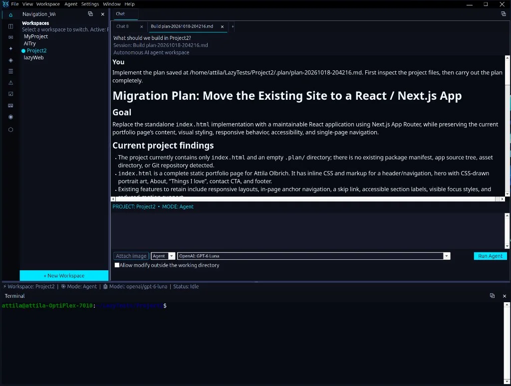

Navigate, edit and chat
Reviewed documentation describes a project tree, single-file editor, Markdown preview, chat, and dockable utility panels.
Lazy Coding Agent brings project navigation, an editor, chat sessions and utility panels together in a native desktop application.
Ask, Plan and Agent modes expose different tool permissions. Review the application's recorded run activity and tool inputs/outputs in its execution details.
Packaged builds are on GitHub Releases. The README describes AI/model execution as in active integration; treat early releases accordingly.
Lazy Coding Agent
Workspaces on the left, open files and chat in the center, and an integrated terminal below—native Lazarus UI on your machine.

These are implementation descriptions from reviewed application files and help, not a claim that every feature is finished or user-tested on your machine.
Reviewed documentation describes a project tree, single-file editor, Markdown preview, chat, and dockable utility panels.
Ask is read-oriented, Plan can save plan files, and Agent can use write, patch and shell tools. Workspace boundaries apply by default.
Session logs and execution detail expose application-recorded context and tool I/O; they are not a display of hidden model reasoning.